韓国 2014年4月9日アップデート
※韓国公式と韓国人プレイヤーから頂いた情報を基にしています。誤訳や韓国独自仕様の可能性もありますので、予めご了承下さい。2014年4月9日 韓国大型アップデートの変更内容一覧
コスチュームシステム実装
攻撃速度増加
コスチュームシステム実装
アバターシステムは、コスチュームシステムに名称変更して実装されました。
コスチュームは各職1パターン×6色あり、また性能によってノーマル/レア/ユニーク/プレミアムの4種類があります。
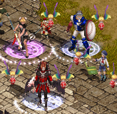
| 剣士 × 侍 | 戦士 × ライダー |
|---|---|
| 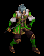 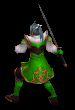 | 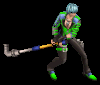 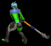 |
| ランサー × チャイナドレス | アーチャー × スノーホワイトプリンセス |
| 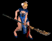 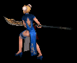 | |
| ウィザード × ヴァンパイア | ウルフマン × ダンディービースト |
| 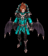 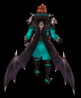 | 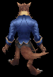 |
| ビショップ × 野球選手 | 追放天使 × 堕落悪魔 |
| 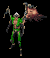 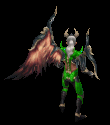 | |
| ビーストテイマー × 女軍人 | サマナー × ワイルドカウガール |
| 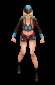 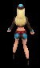 | 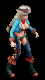 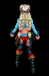 |
| シーフ × キャプテンパイレーツ | 武道家 × ウェイター |
| 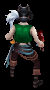 | |
| プリンセス × 幼稚園児 | リトルウィッチ × アラビアンダンスガール |
| 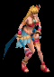 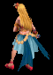 | |
| ネクロマンサー × ピエロ | 悪魔 × 花魁 |
| 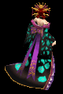 | |
| 霊術師 × バイオレットナース | 闘士 × セクシーバニーガール |
| 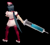 | 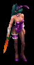 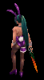 |
| 光奏師 × マリンボーイ | 獣人 × 黒執事 |
| 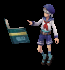 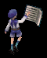 | 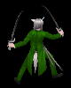 |
| メイド × クラシックメイド | |
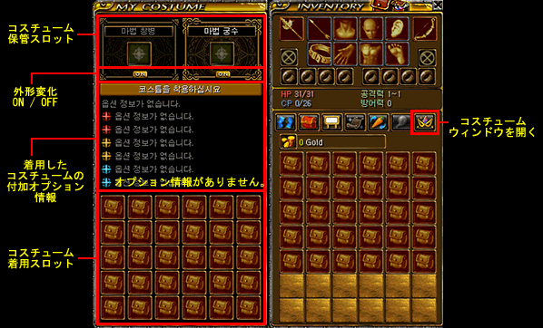
装備欄に、コスチュームウィンドウを開くボタンが追加されました。
コスチューム保管スロットには、変身職と合わせて2つの装備スロットがあります。
外形変化ON/OFFボタンで、コスチュームの表示/非表示を切り替えることができます。
付加オプション情報には、魔法石を使用して付加したオプション効果が表示されます。
コスチューム着用スロットには、30個までコスチュームを保管することができます。
コスチュームの種類
| ノーマル | レア [R] | ユニーク [U] | プレミアム [P] | |
|---|---|---|---|---|
| 入手方法 | 神秘石3個+10万G でNPCより購入 |
ジョン・マルコの黄金袋 | 課金アイテム | |
| 色 | 固定 | 固有色固定 | 色変更機能 | |
| 固定オプション | - | 全てのステータス +20 獲得経験値 +10％ |
||
| 付加オプション | 5個 （赤色2個 / 青色2個 / 金色1個） |
6個 （赤色2個 / 青色2個 /金色2個） |
||
| 有効期間 | 2日 | 永久 | ||
| 分解 | 不可 | 可能 | ||
| 取引 | 不可 | 衣装ケースに収納することで取引可能 | ||
| 装備条件 | Lv1以上 各職業専用 | |||
| 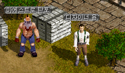 |
ノーマルコスチュームは 武器職人タポの横にいるNPC（102.51）より、 |
| 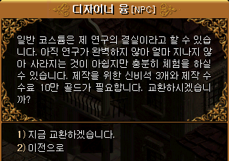 |
神秘石3個+10万Gで購入することができます。 |
| 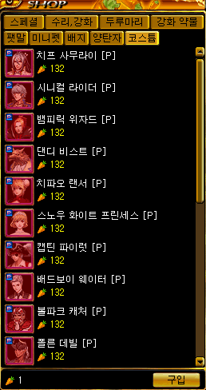 |
プレミアムコスチュームは アイテムモールにて 13200ウォンで販売されています。 |
| 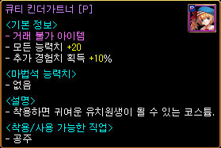 | 幼稚園児 [P] <基本情報> - 取引不可アイテム - 全てのステータス +20 - 獲得経験値 +10％ <着用可能な職業> - プリンセス |
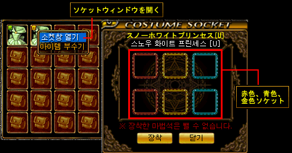
コスチュームを右クリックしてソケットウィンドウを開くと、魔法石を使用してオプションを付加できるソケットが表示されます。
魔法石には、オプションの種類によって赤色/青色/金色の3色と、オプション効果の補正値が異なる下級/中級/上級の3種類があります。
各色のソケットには、各色の魔法石をそれぞれ付加することができます。
一度付加した魔法石を回収することはできませんが、新たな魔法石を上書きして使用することはできます。
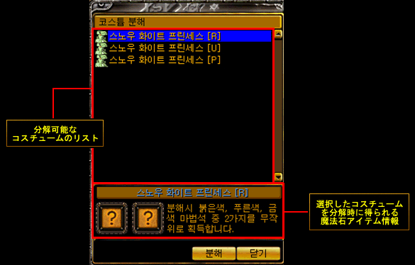
レア/ユニーク/プレミアムコスチュームを分解すると、赤色/青色/金色の魔法石をランダムで2個獲得することができます。
レアコスチュームからは下級魔法石が、プレミアムコスチュームからは上級魔法石がでやすいそうです。
魔法石の種類
| 下級魔法石 | 中級魔法石 | 上級魔法石 | |
|---|---|---|---|
| 入手方法 | ジョン・マルコの黄金袋 コスチューム分解 |
コスチューム分解 | |
| 赤色 攻撃系オプション |
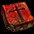 | ||
| 青色 防御系オプション |
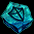 | ||
| 金色 ステータスオプション |
|||
| 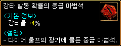 |
強打発動確率の中級魔法石 強打率 +4％ |
| 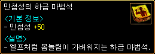 | 敏捷の下級魔法石 敏捷 +50 |
魔法石のオプション効果一例
| 魔法石 | オプション効果 | |
|---|---|---|
| 強打発動確率の下級魔法石 | 強打率 +[1~2]％ | |
| 強打発動確率の中級魔法石 | 強打率 +[3~4]％ | |
| 強打発動確率の上級魔法石 | 強打率 +[5~6]％ | |
| 火抵抗弱化の上級魔法石 | ターゲットの火の抵抗を[12~15]％弱化させる。 | |
| PVP攻撃力の上級魔法石 | PVP状態のときに攻撃力増加 +[15~20]％ | |
| PVP防御力の上級魔法石 | PVP状態のときに防御力増加 +[15~20]％ | |
| 運の上級魔法石 | 運 +[85~100] |
攻撃力 +[n]％
防御力 +[n]％
火属性攻撃力 +[n]％
火抵抗 +[n]％
クリティカル発生確率 +[n]％
魔法クリティカル発生確率 +[n]％
クリティカルダメージ増加 +[n]％
ダブルクリティカルダメージ増加 +[n]％
クリティカルダメージ減少 +[n]％
ダブルクリティカルダメージ減少 +[n]％
ブロック率 +[n]％
ブロッキング速度 +[n]％
命中率 +[n]％
回避率 +[n]％
攻撃速度 +[n]％
ダメージリターン [n]％
最大HP +[n]％
など、その他多数のオプションがあります。
日本で実装された際には、プレミアムコスチュームを大量に購入して良オプション・良補正の上級魔法石が出るまで大量に分解することになりそうです…。
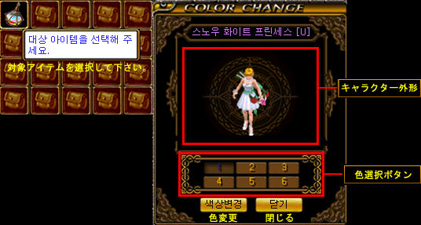
ユニーク/プレミアムコスチュームは、カラーフラスコ（課金アイテム）を使用して、6種類の色に変更できます。
| 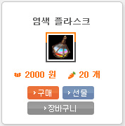 | カラーフラスコ 4月23日のメンテナンスより、2000ウォンで販売されています。 |
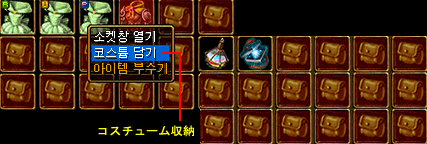
レア/ユニーク/プレミアムコスチュームは、衣装ケース（課金アイテム）に収納することで取引可能になります。
| 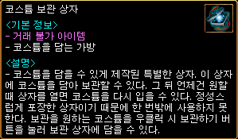 |
衣装ケース 取引不可アイテム アイテムモールにて2000ウォンで販売されています。 |
| 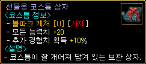 | 衣装ケースに収納されたユニークコスチューム |
攻撃速度増加
全てのキャラクターの基本攻撃速度が20％増加しました。
決戦ワールドでも同様の仕様に変更されているようです。